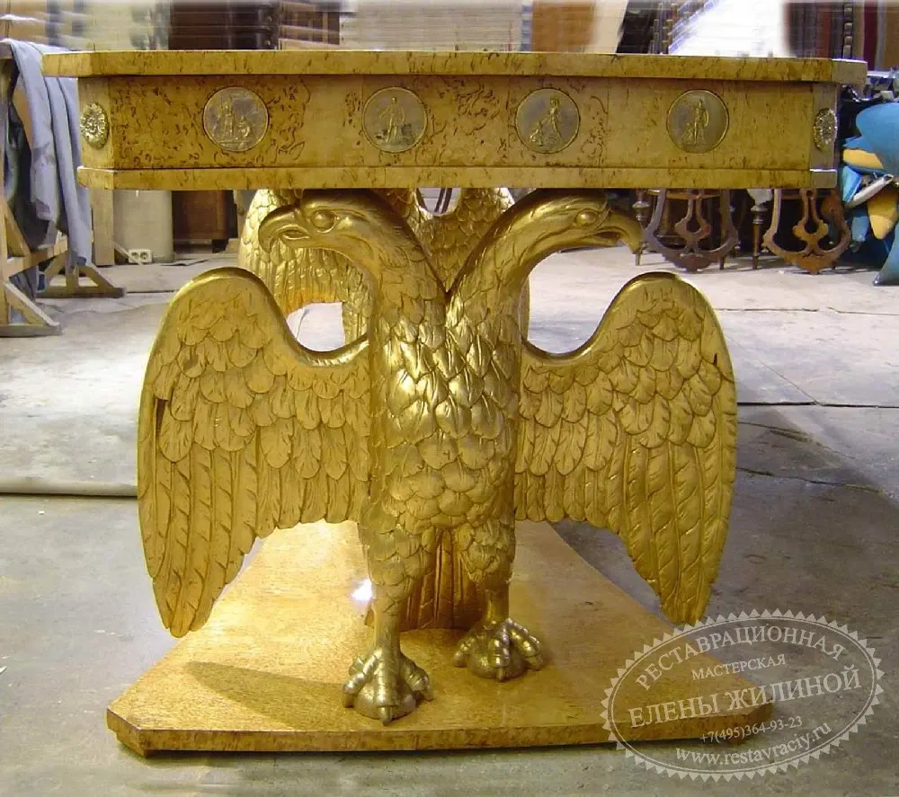
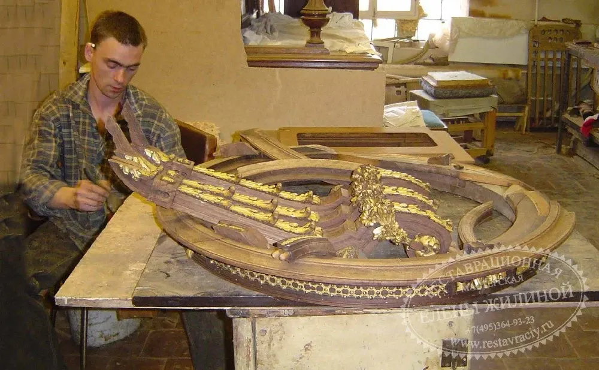
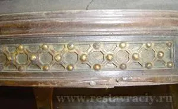
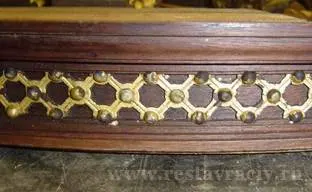
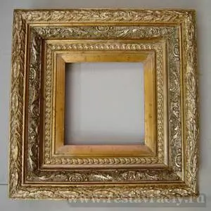
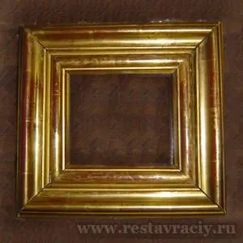

Работы и техники
Позолота дерева
Позолота дерева (мебели, багета, резьбы, лепнины) сусальным золотом состоит в наклеивании тонких листов благородного металла на обрабатываемую поверхность.


О чём рассказывает мастерская
- Золочение сусальным золотом
- Золочение на полимент
В материале мастерской
Фотографии и детали



Открыть снимок у мастерской


Открыть снимок у мастерской


Открыть снимок у мастерской


Открыть снимок у мастерской


Открыть снимок у мастерской
Есть похожая вещь?
Подберите ракурсы для предварительной оценки.